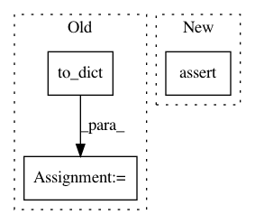

53b261a5a1fad07eaacef60e4861adaf0ec538f0,snips_nlu/tests/test_probabilistic_intent_parser.py,TestProbabilisticIntentParser,test_should_be_serializable,#TestProbabilisticIntentParser#,109
Before Change
parser.fit(validate_and_format_dataset(BEVERAGE_DATASET))
// When
actual_parser_dict = parser.to_dict()
// Then
expected_parser_config = {
"unit_name": "probabilistic_intent_parser",
After Change
metadata_intent_classifier = {"unit_name": "test_intent_classifier"}
self.assertJsonContent(self.tmp_file_path / "metadata.json", metadata)
self.assertJsonContent(self.tmp_file_path / "intent_parser.json",
expected_parser_dict)
self.assertJsonContent(
self.tmp_file_path / "intent_classifier" / "metadata.json",
metadata_intent_classifier)
self.assertJsonContent(
In pattern: SUPERPATTERN
Frequency: 11
Non-data size: 3
Instances
Project Name: snipsco/snips-nlu
Commit Name: 53b261a5a1fad07eaacef60e4861adaf0ec538f0
Time: 2018-07-09
Author: adrien.ball@snips.net
File Name: snips_nlu/tests/test_probabilistic_intent_parser.py
Class Name: TestProbabilisticIntentParser
Method Name: test_should_be_serializable
Project Name: snipsco/snips-nlu
Commit Name: 53b261a5a1fad07eaacef60e4861adaf0ec538f0
Time: 2018-07-09
Author: adrien.ball@snips.net
File Name: snips_nlu/tests/test_probabilistic_intent_parser.py
Class Name: TestProbabilisticIntentParser
Method Name: test_should_be_serializable_before_fitting
Project Name: snipsco/snips-nlu
Commit Name: 53b261a5a1fad07eaacef60e4861adaf0ec538f0
Time: 2018-07-09
Author: adrien.ball@snips.net
File Name: snips_nlu/tests/test_log_reg_intent_classifier.py
Class Name: TestLogRegIntentClassifier
Method Name: test_should_be_serializable
Project Name: snipsco/snips-nlu
Commit Name: 53b261a5a1fad07eaacef60e4861adaf0ec538f0
Time: 2018-07-09
Author: adrien.ball@snips.net
File Name: snips_nlu/tests/test_deterministic_intent_parser.py
Class Name: TestDeterministicIntentParser
Method Name: test_should_be_serializable
Project Name: pymc-devs/pymc3
Commit Name: 68d5201292b45feecbfaf88a10aa8e392d5ab9f2
Time: 2020-11-23
Author: ColCarroll@users.noreply.github.com
File Name: pymc3/tests/test_sampling.py
Class Name: TestSamplePPC
Method Name: test_deterministic_of_observed
Project Name: snipsco/snips-nlu
Commit Name: 80c863816b382afee76dd8f92c7f60d2579d56b8
Time: 2019-01-02
Author: adrien.ball@snips.ai
File Name: snips_nlu/tests/test_nlu_engine.py
Class Name: TestSnipsNLUEngine
Method Name: test_should_be_deserializable_from_dir
Project Name: snipsco/snips-nlu
Commit Name: 53b261a5a1fad07eaacef60e4861adaf0ec538f0
Time: 2018-07-09
Author: adrien.ball@snips.net
File Name: snips_nlu/tests/test_crf_slot_filler.py
Class Name: TestCRFSlotFiller
Method Name: test_should_be_serializable_before_fit
Project Name: polyaxon/polyaxon
Commit Name: 36fa42be1bad5ffade1b48b93ac4ba249f2e121a
Time: 2017-09-26
Author: mouradmourafiq@gmail.com
File Name: tests/test_settings.py
Class Name: TestSettingConfigs
Method Name: test_gpu_options_config
Project Name: polyaxon/polyaxon
Commit Name: 36fa42be1bad5ffade1b48b93ac4ba249f2e121a
Time: 2017-09-26
Author: mouradmourafiq@gmail.com
File Name: tests/test_settings.py
Class Name: TestSettingConfigs
Method Name: test_run_config
Project Name: snipsco/snips-nlu
Commit Name: 53b261a5a1fad07eaacef60e4861adaf0ec538f0
Time: 2018-07-09
Author: adrien.ball@snips.net
File Name: snips_nlu/tests/test_deterministic_intent_parser.py
Class Name: TestDeterministicIntentParser
Method Name: test_should_be_serializable_before_fitting
Project Name: polyaxon/polyaxon
Commit Name: 36fa42be1bad5ffade1b48b93ac4ba249f2e121a
Time: 2017-09-26
Author: mouradmourafiq@gmail.com
File Name: tests/test_settings.py
Class Name: TestSettingConfigs
Method Name: test_session_config